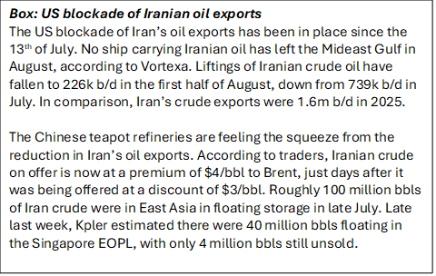
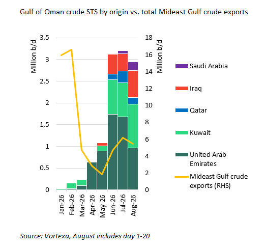

Washington’s Operation Economic Outcast against Iran appears to be little more than a step up in rhetoric for now. More significant for tankers is the growing stalemate in the Strait of Hormuz. The US is hoping economic pressure will force open the Strait, but Iran has a high pain tolerance. Iran and Oman are currently negotiating an agreement for temporary management of the Strait. Yet Iran is unlikely to agree to restore normal traffic flows unless the US lifts its blockade on Iranian oil exports and grants waivers allowing Iranian crude sales, both concessions the US is unlikely to make.
Meanwhile, Iran launched its own blacklist of ships over the weekend, heightening the risk for shuttle tankers transiting the Strait. Both the US and Iran have drawn their lines in the sand, warning of potential penalties for ships, or those doing business with them, if they coordinate a Hormuz transit with the rival side. The resulting operational uncertainty raises the risk that fewer owners will be willing to transit the strait, which is likely to increase freight premiums for Mideast Gulf loadings.
For now, few new targets in US sanctions
The US stopped short of imposing secondary sanctions or penalties on Iran’s trading partners, including China, the importer of more than 90% of Iran’s crude. Instead, countries trading with Iran will receive warnings to wind down economic engagement with Iran. Whether the US warning will be followed up with sanctions on Chinese banks or larger entities involved in importing Iranian oil remains to be seen. But with the ongoing US blockade of Iran’s oil exports, China’s opportunities to purchase Iran’s oil are shrinking (see box).
The new sanctions named a handful of entities facilitating Iranian oil exports, including brokers, bunker suppliers, STS providers and six ships transporting Iranian oil and gas. But they introduced little that was new beyond explicitly naming the shipping sector as a future target. This emphasis on shipping could mean a wider crackdown on entities providing Iran with maritime insurance or other shipping-related services.

Competing enforcement regimes in Hormuz
In coordination with Operation Economic Outcast, the US published official guidance warning that engaging with Iran’s Persian Gulf Strait Authority (PGSA) to facilitate safe passage through Hormuz could trigger US sanctions or penalties. This includes occasions when only information and no payment is exchanged with the PGSA. The US guidelines mostly serve to clarify and reinforce its earlier statements.
Iran’s blacklist names 46 ships it accuses of transiting the Strait of Hormuz without its approval. It threatened fines or seizure of the offending ships if they transit Hormuz in future without coordinating with Iran. Iran also warned shipowners and charterers against engaging in STS with or fixing the blacklisted ships. Interaction with a blacklisted ship could earn the offender a place on Iran’s list.
Iran’s attempt to set up a rival shipping blacklist has yet to change owners’ risk calculus, according to our brokers. But Japanese charterers are reportedly wary and are likely to avoid STS with the blacklisted vessels. Exports to Japan have only accounted for less than 2% of the oil exported from inside the Mideast Gulf since the MoU broke down in July.
The greater risk is that Iran may act on its threats and somehow manage to seize a ship on the blacklist or one that interacted with a ship on the blacklist. This could prompt players in the shipping industry to police themselves and refuse to engage with the blacklisted ships. In this case, Iran would have de facto control over the Strait by choking off any interaction with the ships keeping oil flowing from the other Gulf exporters. However, full realisation of this outcome appears unlikely, given the ongoing US facilitation of Hormuz transits and opposition from Gulf states over Iran’s control over the Strait. The US claimed last week that 8m b/d of oil moved through the Strait of Hormuz over the recent seven-day period. Vortexa data shows 6.3m b/d of oil transiting through the Strait over roughly the same period. Most ships are transiting Hormuz without AIS on, making the true volume of oil getting out of Hormuz difficult to trace in cargo-tracking data.
Shuttle tanker trade vulnerable
Iran’s blacklist targets the VLCCs that have been shuttling crude out of the Mideast Gulf for STS in the Gulf of Oman. The 12 VLCCs blacklisted by Iran have accounted for 900k b/d (16%) of all crude liftings from inside the Mideast Gulf since the MoU collapsed in early July. They have carried around 750k b/d (24%) of all crude transferred via STS in the Gulf of Oman over the same period.
If owners begin avoiding these highly active shuttle tankers, the ships yet unnamed by Iran and still willing to transit Hormuz are likely to command higher premiums.
The shuttle trade out of the Mideast Gulf has been vital to keep crude oil flowing from the region, especially given the heightened risk to Saudi Red Sea exports over the last month. Mideast Gulf crude exported via STS in the Gulf of Oman has averaged 3.1m b/d since the MoU collapsed in early July, according to Vortexa. This is nearly 30% of the 5.6m b/d of crude oil exports from inside the Mideast Gulf over the same period. The UAE and Kuwait have accounted for the largest share of these shuttle exports, at 1.3m b/d and 940k b/d, respectively, while a smaller volume has originated in Iraq, Qatar and Saudi Arabia (see chart). Saudi Arabia has recently offered more spot cargoes to Asian buyers to load via STS in the Gulf of Oman at end of August, according to Argus.
Refined products have been exported out of the Mideast Gulf in smaller volumes than crude, averaging 918k b/d since the MoU collapsed, with 333k b/d exported via STS in the Gulf of Oman. Roughly 53% (180k b/d) of this STS volume is naphtha, 19% (64k b/d) is diesel, 15% jet (50k b/d) and the balance fuel oil. An LR2 that shuttled jet fuel and diesel out of the Gulf and an LR1 that shuttled diesel were both named on Iran’s blacklist.
